弘法山
| 日付 | 2009年1月4日（日） |
|---|---|
| 山域 | 丹沢 |
| メンバー | グループ（男5女5） |
| 山行形態 | 日帰り |
| アクセス | 電車 |
| ルート (Map) | 鶴巻温泉駅→弘法山→権現山→登山道入口 |
新年が明けて最初の山行は、丹沢前衛の弘法山。
何度も行っている山だが、今回はいつもと逆コースを歩いてみる。
9:59 鶴巻温泉駅到着。標高20m。
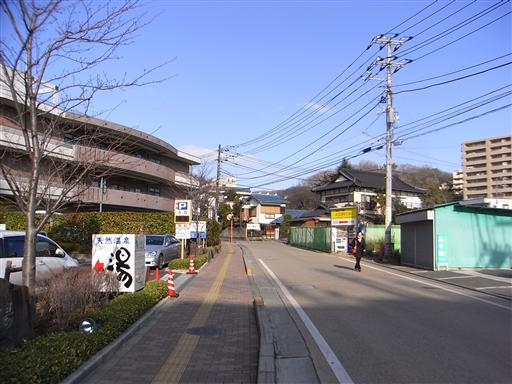
登山道入口付近には、無人の野菜売り場が設けられている。
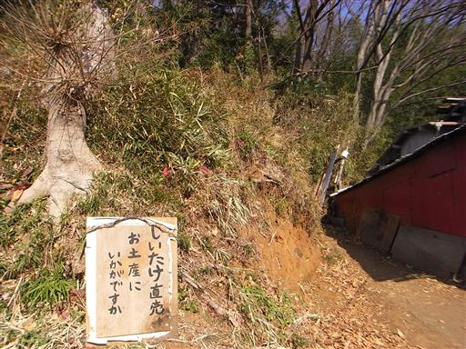
周囲には冬枯れの景色が広がっている。
関東の冬は青空が広がっていて気持ちがよい。
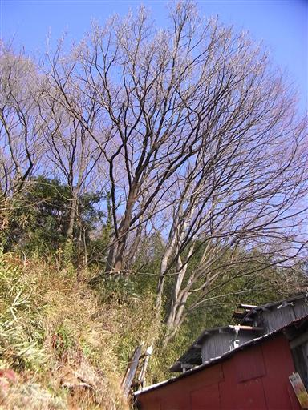
よく整備された尾根道を歩いていく。
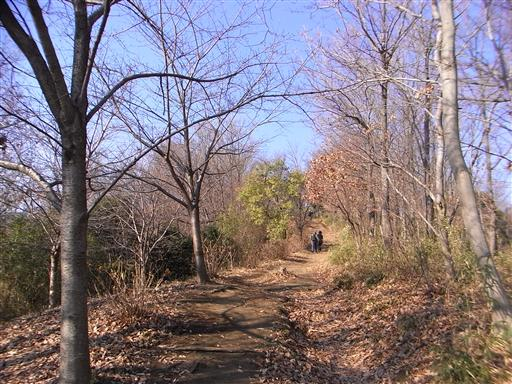
樹間からは富士山が望める。今日は少し霞んでいる。
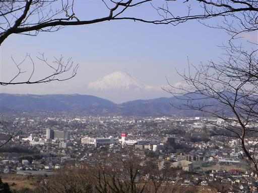
11:46 弘法山山頂到着。標高235m。
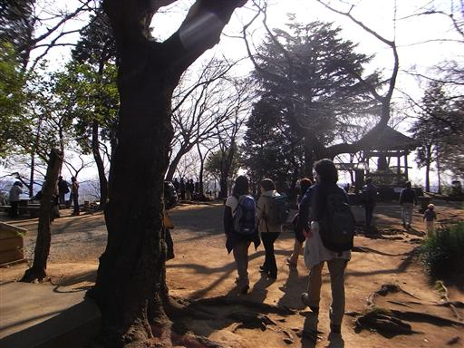
山頂には弘法大師が祀られている。
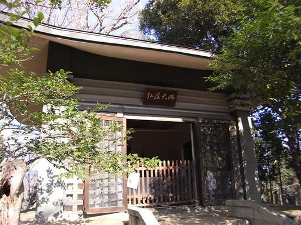
山頂にある井戸。形だけでなく、ちゃんと水が出てくる。
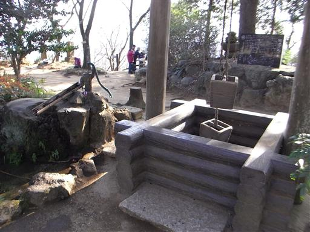
鐘があるが、勝手に撞くなと注意書きがある。

山頂付近にはデブ猫がうろついている。
多くの登山者から餌をもらっているのだろうか？
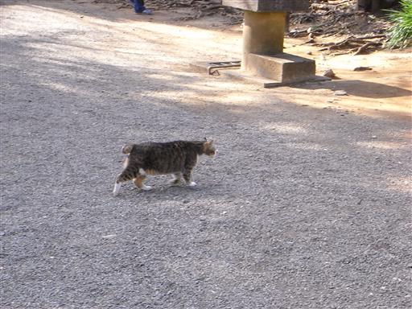
山頂からは遠くの方に相模湾が見える。
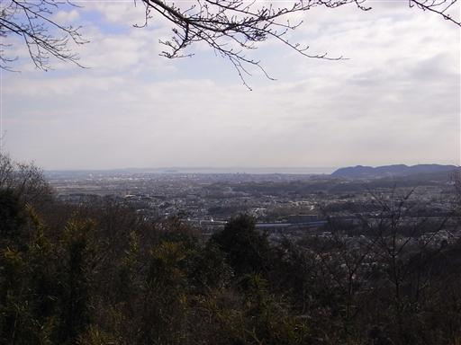
弘法山から権現山に向かう道は、山の上とは思えないほどよく整備されている。
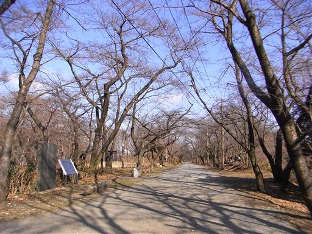
12:59 権現山山頂到着。
昨年の春、花見をやったところだ。
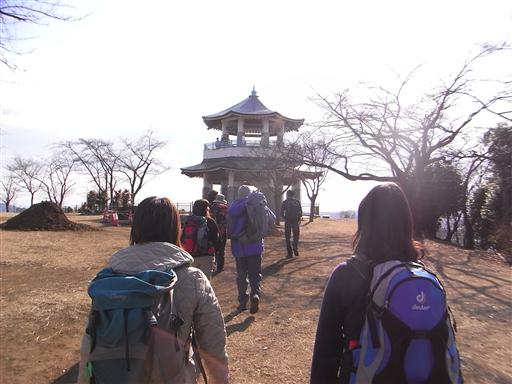
展望台からは大山がきれいに見えている。
桜の季節になるとここは一面ピンクに染まる。

14:15 下山。
温泉に寄って帰る。
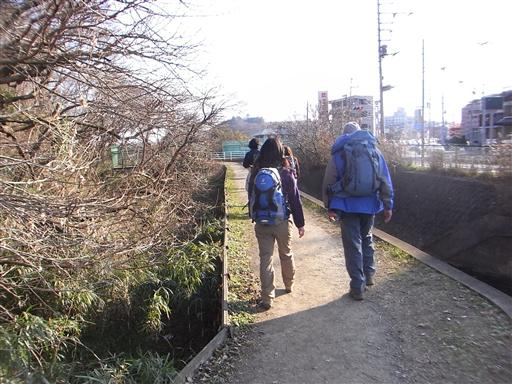
他の山行記録